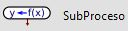

Semana 11
Otras funciones en PSeInt
Otras funciones
En PSeInt podemos encontrar algunas otras funciones tales como:
| Nombre de la función |
Descripcion |
| $\mathrm{Borrar\, pantalla}$ |
Esta función limpia la pantalla de cualquier objeto en el interprete |
| $\mathrm{Esperar \,tecla}$ |
Detiene la ejecución del algoritmo hasta que el usuario presione cualquier tecla. |
| $\mathrm{Esperar }\, n\, \{\mathrm{ Segundos,Milisegundos}\}$ |
Espera un tiempo de $n$ segundos o milisegundos para continuar con el algoritmo |
| $\mathrm{Azar}(n)$ |
Devuelve un número aleatorio entre $0$ y $n-1$ |
| $\mathrm{Aleatorio}(n,m)$ |
Devuelve un número aleatorio entre $n$ y $m$ |
Práctica
Escribir el pseudocodigo de un algoritmo que simule una ruleta con números entre $0$ y $100$,
el algoritmo debe cumplir con lo siguiente:
- El algoritmo debe mandar un mensaje al usuario indicandole que
presione cualquier tecla para comenzar a girar la ruleta.
- El numero obtenido al hacer girar la ruleta, es
generado por el algoritmo de forma pseudoaleatoria.
- El algoritmo debe imprimir $50$ puntos sucesivos simulando el suspenso
(la espera mientras termina de girar la ruleta), entre punto y punto Esperar $150$ Milisegundos.
- Cuando se termine de imprimir los puntos suspensivos limpiar la pantalla e imprimir un mensaje
mostrando cual fue el número obtenido en la ruleta.
Práctica
Escribir el pseudocodigo de un algoritmo que genere dos números aleatorios entre $0$ y $99$,
e imprima dichos números en forma de resta (por ejemplo: $25 - 10 = \,\,\,\,$), el usuario debe intentar
resolverlo correctamente y escribir el resultado. En caso de ser correcto imprimir
“Felicidades, tu resultado es correcto”, en caso contrario imprimir
“Lo siento, el resultado era:_____” e imprimir
el resultado correcto. El proceso se llevará a cabo hasta que el usuario conteste correctamente.
Funciones de cadenas de caracteres
Funciones de cadenas de caracteres
PSeInt cuenta con funciones para trabajar con cadenas de caracteres:
| Nombre de la función |
Descripcion |
| $\mathrm{Longitud}(s)$ |
Devuelve el número de caracteres de la cadena $s$ |
| $\mathrm{Subcadena}(s,i,j)$ |
Devuelve la subcadena desde la posición $i$ hasta la posición $j$ |
| $\mathrm{Concatenar}(s_{1},s_{2})$ |
Devuelve una cadena con los contenidos de $s_{1}$ y $s_{2}$ unidos |
| $\mathrm{ConvertirANumero}(s)$ |
Devuelve el valor de $s$ convertido de texto a número |
| $\mathrm{ConvertirATexto}(n)$ |
Devuelve el valor de $n$ convertido de número a texto |
| $\mathrm{Mayusculas}(s)$ |
Devuelve el contenido de $s$ convertido a Mayusculas |
| $\mathrm{Minusculas}(s)$ |
Devuelve el contenido de $s$ convertido a Minusculas |
Práctica
Escriba el pesudocodigo de un algoritmo que lea una línea de texto, e imprima
la línea de texto con letras mayúsculas y luego con letras minúsculas.
Práctica
Escriba el pesudocodigo de un algoritmo que lea dos cadenas de texto introducidas por el usuario y
determine si la longitud de la primera cadena es menor, igual o mayor que la segunda.
Práctica
Escriba el pesudocodigo de un algoritmo que lea una cadena de texto introducida por el usuario y
determine e imprima el número total de espacios que aparecen la cadena.
Funciones / Subprocesos en pseint
Introducción
En programación es muy frecuente hacer uso del algoritmo "Divide y venceras",
el cual consiste en resolver un problema difícil, dividiéndolo en
subproblemas más sencillos de resolver (tantas veces como sea necesario),
cada uno de estos subproblemas realizan una tarea especifica a la vez y
su implementación es mediante funciones dentro del algoritmo.
En PSeInt las funciones son también llamadas Subprocesos
.
Un subproceso es una instrucción que permite agrupar variables y sentencias, cuya finalidad es la de ejecutar
una tarea especifica, se pueden añadir una o varias funciones, en un algoritmo,
en esencia las funciones son subprogramas dentro de un programa, que se pueden invocar
(ejecutar) desde cualquier parte del programa, es decir, desde otra función,
desde la misma función o desde el programa principal, cuantas veces sea necesario.
En general, la sintaxis de un subproceso en PSeInt es:

- variable_de_retorno: si el subproceso o función, calcula y devuelve un valor,
se debe colocar el nombre de la variable que se utilizará para almacenar ese valor;
si el subproceso o función no devuelve nada se puede eliminar la variable con su
operador de asignación
 .
.
- nombre: es el nombre que recibirá el subproceso o función.
- Argumentos: los argumentos son variables que requiere la función,
utilizando comas para separarlos, si el subproceso o función no requiere
argumentos puede dejarse en blanco, y de manera opcional omitir los paréntesis.
Definición
- Si el subproceso no retorna ningun valor, se dice que es un procedimiento.
- Si el subproceso retorna un valor se le conoce como función.
- Si el subproceso no recibe parametro se pueden colocar los parentesis vacios u omitirse:
Observación
Enseguida se enlistan algunos aspectos importantes que debemos tener en cuenta
cuando se utilizan subprocesos:
- Para invocar o llamar a un subproceso se debe utilizar el nombre del subproceso y
entre parentesis sus argumentos (en caso de ser necesarios) separados por comas.
- Llamar a un subproceso provoca que este se ejecute.
- Los argumentos deben coincidir con los parametros en cantidad y tipo.
De igual manera, la variable de retorno debe coincidir con la variable
que recoge dicho valor en el proceso desde el cual fue invocado el subproceso.
- Cuando las instrucciones del subproceso se han realizado, el control regresa
al punto desde el que se llamo en el programa principal o utro subproceso.
Observación
Los argumentos de un subproceso serán definidos en el proceso que realice la llamada, y por lo tanto
el subproceso los recibira con el mismo tipo de dato ya definido. Por esta razon, no se debe volver
a definir el tipo de dato de la variable que es argumento dentro del subproceso.
Ejercicio
Un palindromo es una palabra o frase que se lee igual de izquierda a derecha que
de derecha a izquierda. Por ejemplo, las siguientes oraciones son palindromos:
- Anita lava la tina
- Di clases al Cid.
- Dabale arroz a la zorra el abad
- Arriba la birra
- Anula la luna
- Atar a la rata
- Ella te da detalle
- Ateo poco poeta
- La tele letal
- La ruta natural
- La ruta nos aporto otro paso natural
- Ligar es ser agil
- Luz azul
Escribir el pseudocódigo de un algoritmo que lea una cadena introducida
por el usuario y determine si es palindromo. Imprima un mensaje adecuado.
Utiliza subprocesos.
Práctica
Escribir el pseudocódigo de un algoritmo que solicite al usuario tres números reales,
determine el mayor y el menor de ellos y los imprima con un mensaje adecuado. Define y utiliza
un subproceso que determine el mayor de dos numeros reales.